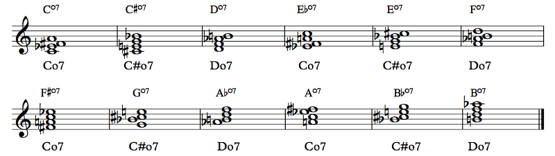
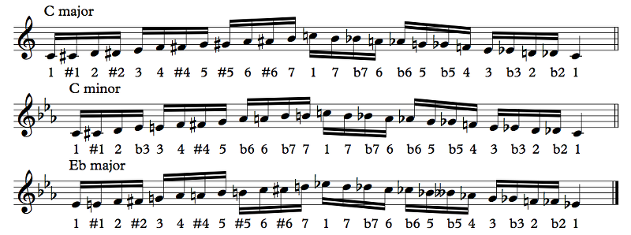
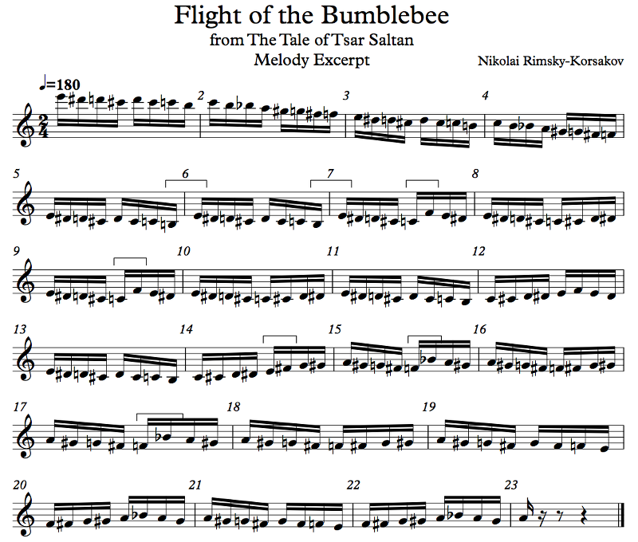
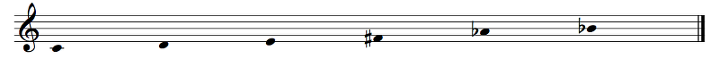
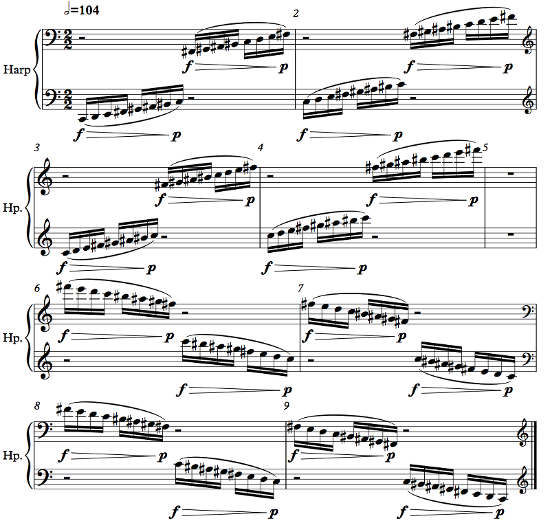
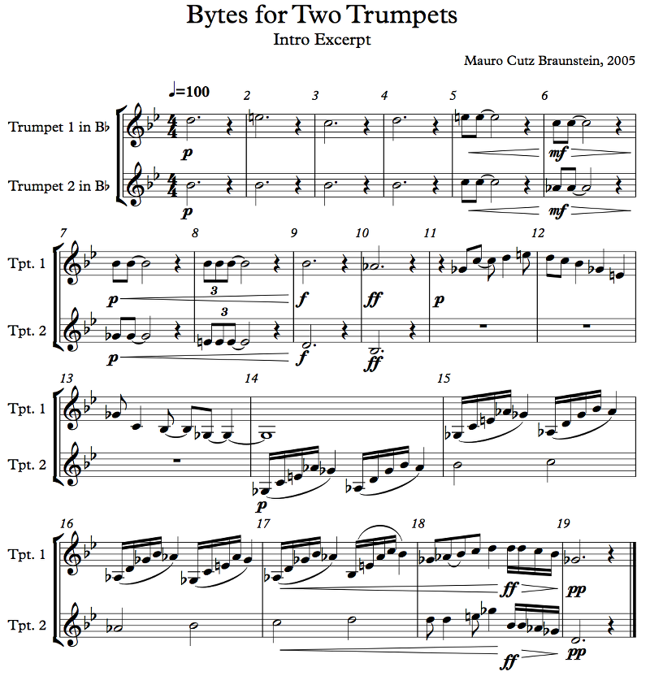
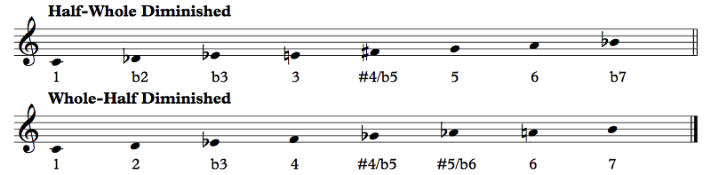
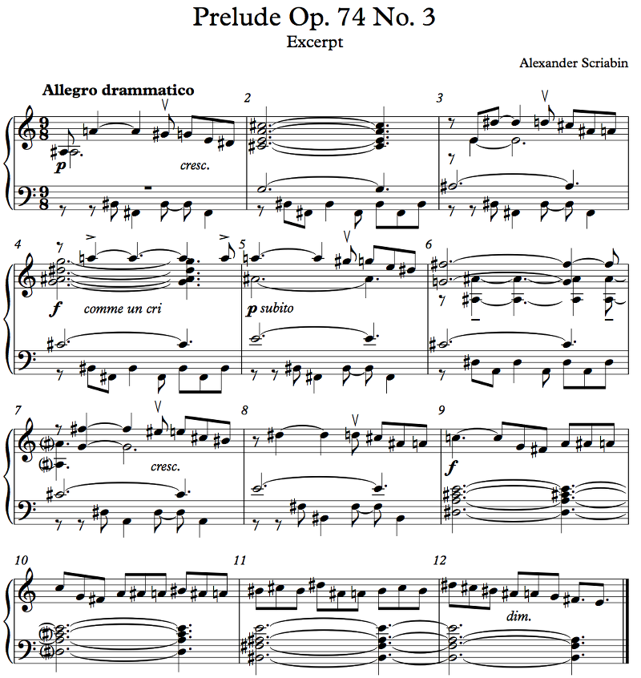
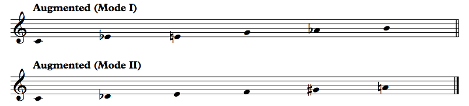
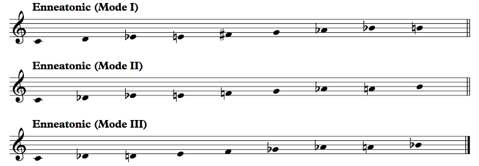

We talked about these as jazz chords a tiny bit in the last chapter, so let's discuss them properly now. A scale is said to be symmetric when, if you transpose the scale by some amount, you get the same notes. Almost all of the scales we've looked at so far are octave-repeating, meaning that if you transpose the scale up by an octave, you get the same notes. For example, E major is E F# G# A B C# D#. If you transpose it up an octave, you get E F# G# A B C# D#, which is the same as E F# G# A B C# D#.
No, I'm saying things that are completely obvious. Actually, they might not be so obvious, but we in Western music have the principle of octave equivalence, which says that a D is a D whatever octave it appears in, and this principle is so ingrained in our musical culture — I mean, look at how I described the note D without referring to an octave; in Boethius's earliest descriptions, the notes went from A to O and spanned two octaves — so it's completely obvious to us. The fact is that most of the scales we deal with are symmetric with respect to the octave.
And, as you pointed out, that is not very interesting. So when we talk about symmetric scales, what we're really talking about are scales that are symmetric with respect to intervals smaller than the octave as well as the octave itself.
Mathematically, these are pretty limited. If we assume N equally-spaced notes to the octave, any symmetry has to be a factor of N (I'll leave the proof as an exercise to the reader, but if you know basic algebra it should be trivial).
Yeah. The group of transpositions is a cyclic group generated by transposing the scale up a N-TET step. You should be able to fill in the details from here.
Oy. Fine. Well, if you do know undergrad-level abstract algebra, you should be able to prove it. But let's make it concrete. Our Western system has 12 notes to the octave, right? So any scale that's symmetric must be the same under a transposition by 1, 2, 3, 4, or 6 semitones, since those are the factors of 12. An example would be the diminished 7th chord. Let's look at it (spelled enharmonically for our convenience):
Example 7.58
The above chart shows that there are only three diminished 7th chords, not counting enharmonic differences. If you transpose a Cdim7 up a minor third — three semitones — you get Ebdim7, which has the same four notes as Cdim7. We can therefore say that the diminished 7th chord is symmetric with respect to transposition by three semitones. 3 is a factor of 12, as it should be. In addition, any scale that has this symmetry will need to consist of diminished 7th chords on top of each other, because if the scale has a D, for example, it also needs to have an F, an Ab, and a B (or their enharmonic equivalents, obviously). This means that it needs to contain some multiple of 4 notes (since there are 4 = 12/3 notes in the diminished 7th chord). The multiples of 4 are 4, 8, and 12; the 12-note scale is the chromatic scale and the 4-note scale in question is the diminished 7th chord itself, so that leaves the 8-note (octatonic) scales we're going to talk about presently.
As another quick example, the augmented triad is similarly symmetric with respect to transposition by four semitones; 4 is a factor of 12, and there are 12/4 = 3 notes in the augmented triad. Any scale with this symmetry should have some multiple of 3 semitones, then: 3 (the augmented triad itself), 6, 9, or 12 (the chromatic scale).
Note that, as the interval of symmetry needs to be a factor of the number of steps, if the octave is divided into a prime number of steps (like 19, 31, 53, etc.), symmetric scales (other than the equivalent of the chromatic scale with all of the notes in the octave) are impossible. I mention these numbers in particular because 19-TET, 31-TET, and 53-TET are some of the most prominent alternative tunings (we'll discuss them eventually). On the other hand, 24-TET has all the symmetries that 12-TET has, plus an additional symmetry where you can divide the octave into 8.
Not all symmetric scales are used much in music, so let's talk about the ones that are:
The chromatic scale is the most boring. It's just... every note. Our usual way of spelling notes is particular to 7-note scales, so there's naturally going to be some tension regarding spelling. We've already seen this in practice in Example 4.10, but here are three ways to spell the chromatic scale, going up and going down:
Example 7.59
Honestly, it doesn't matter. The idea is that each note is spelled according to its tonal tendencies, so since the D# is resolving up to E in the C major example, we label it a D#, but in the C minor example, the Eb is stable, not resolving up, and the Eb is obviously stable in Eb major. The general rule of thumb is sharps up, flats down, but when that rule conflicts with the stable notes of the key we're in, the correct course of action gets a bit murky. It just doesn't really matter very much, though. Just use your best judgment.
Some composers use only sharps in that case. Sometimes they even drop the rule that the accidental stays for the entire measure, adding an accidental in front of every single note.
Speaking of atonal music, the chromatic scale as an independent entity really only makes sense in an atonal context. There's no such thing as "the C chromatic scale", especially since, as a symmetric scale, any note could be considered the "root". Almost all of the scales we've looked at so far are actually subsets of the chromatic scale, so if a piece uses the C major scale, we can just as easily say that it uses the chromatic scale, but that wouldn't be very meaningful. So, if the music doesn't use any other scale, which probably means that it's atonal, talking about the chromatic scale makes more sense.
Unfortunately, a full discussion of atonal music will have to wait. What I will say is that there's a kind of organizational principle using the chromatic scale called a tone row, in which a composer puts the notes of the chromatic scale in some order and proceeds to reuse that list of notes throughout the piece, possibly with transformations like transposition, retrograde (playing it backwards), and mirror inversion. For a big list of tone rows and pieces using them, check Wikipedia's List of tone rows and series.
The chromatic scale is very often used for chromatic runs.
Ha. Ha.
Chromatic runs are just when you go from one note to another and you hit every note in between. It's not so easy to do on piano since you can't just slide your hand across the keys chromatically, but since people generally practice chromatic scales on other instruments, it's possibly easier than runs that follow other scales that may be less well-practiced. Chromatic runs also obscure the sense of tonality, which can be a desirable effect (or not). Here's a singularly famous example, Rimsky-Korsakov's Flight of the Bumblebee from his opera The Tale of Tsar Saltan (more info on Wikipedia, complete sheet music on IMSLP):
Example 7.60
In the original piece, this bit of the melody passes between the flutes and violins, so it's not exactly continuous like I made it look, but the melody itself makes sense this way. I marked with a bracket all of the intervals that are not chromatic.
Yes, and yet the piece is solidly in A minor. You can tell this from the harmony. Bumblebees in real life don't buzz in a key, so the chromaticism helps evoke the feel of this insect, but Rimsky-Korsakov did not want to write atonal music, and you can hear that in the harmony and in the notes emphasized by these chromatic runs, which are mostly the first note of each grouping, the leaps, etc. The exception here is at 14, where the melody goes up a major second. What's up with that? Well, Rimsky-Korsakov wanted to get to A, and there are five notes to get from E to A but he only had space for four. Many composers writing chromatic runs will just write quintuplets or whatever is necessary, often with the understanding that the runs are just going to be played approximately anyway, but here, the 16th note rhythm is vital to the character of the piece, so he opts to just drop a note. If you ever see chromatic runs of 32nd notes or smaller at a fast tempo, you can bet that nobody will hear the notes individually anyway.
For now, let's move on to something less trivial:
The whole tone scale is... nothing but whole tones:
Example 7.61
This scale is hexatonic, meaning that it has 6 notes, but there's a different scale sometimes referred to as the hexatonic scale that we'll mention a bit later. The spelling here is not clear. I personally find the above arrangement the easiest to work with in a tonal context, but if you're using symmetric scales you're kind of already given up on tonality, right? The first five notes are the same as in lydian augmented (a mode of the melodic minor scale), and the last five notes are the same as in the altered scale, kind of allowing the whole tone scale to work in the context of melodic minor harmony in jazz. The first four notes are the same as in lydian and the last four notes the same as in locrian, and the first four notes plus the sixth are the same as in lydian dominant, so you can almost think of the whole tone scale as a kind of lydian scale that works on both ends. However, the scale is completely symmetric, so any note can be the root of the scale (I wouldn't so much call it a tonic). The whole tone scale consists of two interlocking augmented triads; the whole tone scale on C, for example, is a composite of C+ and D+. There are only two whole tone scales, the one on C (or D, or E, or F#, or Ab, or Bb) and the one on Db (or Eb, or F, or G, or A, or B). Like the chromatic scale, which is also completely symmetric, the whole tone scale has no modes, since any mode of the scale would still be the whole tone scale.
Whole tone runs are associated with dream sequences, flashbacks, that sort of thing. Here's a simple example:
Example 7.62
Ah, that's because the harp is a clever instrument, but there are some problem you need to use trickery to solve. The harp has 7 strings per octave. But... there are 12 notes per octave, right? So how does the harp play those notes? The usual, orchestral harp has 7 pedals, one for each note in the octave, and each pedal can go in three different positions to indicate flats, naturals, or sharps for all instances of that pitch class. In this example, the harpist would have the C, D, and E pedals set to naturals and the F, G, A, and B pedals set to sharps. This means that there's a repeated note, since B# is the same as C natural, but this also means that the harpist can just run a finger down the harp in a glissando instead of having to play each individual note, which makes this passage much more playable. The harp is actually quite unsuitable for playing chromatic runs, since it takes some effort to flip the pedal, but if you have diatonic runs or similar scales where a note can just be repeated, you can just set the pedals and play away.
The whole tone scale isn't usually around for very long passages. That's because, as a symmetric scale, it's kind of boring. It has a particular sound, but there's just not much more you can do with that sound. That said, there's plenty you can get out of it! I wrote a piece once, many years ago, that heavily featured whole tone material (though not exclusively); here's part of it (the recording has the whole thing):
Example 7.63
This passage is entirely in the whole tone scale, and it kind of oscillates between Bb lydian dominant and Gb lydian dominant. In the whole tone scale, they're equivalent anyway since they're the same scale. (The rest of the piece uses more traditional materials while going back to the themes exposed in the intro.) There are some features of the whole tone scale on display here that make it not so bad for tonal materials, though building an entire piece out of them is simply going to get boring. The main thing is that we have a perfectly serviceable I chord by simply using a major third. If we think of Bb as the tonic, we also have a bVI chord (Gb Bb major third), bVII chord (Ab C), and II chord (C E). We even have a dominant chord on the tonic or any other root by doing 1 3 b7, which here would be Bb D Ab. Of course, we don't have a perfect fifth in this scale, but we can still use the sound of the dominant 7th. But in lieu of that fifth, we do have the augmented fourth, and in a tonal context, the #4 strongly leads into the 5. That's why the 1 3 #4 chord, the so-called "lydian triad", works as a tonic. By using the #4, we can pretend that there's a 5 that we're just not reaching.
I should also point out that once we cross the enharmonic boundary from the #4 to the b6, we kind of lose our sense of tonality. The whole tone scale, if used in a tonal manner, works best as a plagal mode than an authentic one. Of course, it's quite easy to slip from tonal to atonal. In the above excerpt, measure 1 is clearly in Bb while measure 11 is clearly in Gb; can you figure out at which point the tonal center changes? I think 7 through 10 erase any sort of Bb feeling, and 10 especially has an Ab against a Bb, an unresolved m7. The Ab can continue going down to the Gb at 11, so 11 establishes a whole new key after the Bb had been wiped out in 7-10 despite being present in every chord. This happens because the second trumpet crosses that enharmonic boundary. We don't really hear measure 9 as a 3 - 1 relationship anymore; it feels more like an augmented fifth than a minor sixth. If I had spelled the second trumpet more in line with how it feels, measure 8 would be Fb instead of E and measure 9 would be Ebb instead of D.
By the way, notice how the second trumpet at 15 has the same theme as the first trumpet at the very beginning, except a major third lower. We hear this theme as 3 - #4 - 2 - 3, but later on in the piece we hear it as 1 - 2 - b7 - 1. It's the magic of symmetry.
The chromatic scale is symmetric with respect to transposition by 1 semitone; the whole tone scale, by 2 semitones. Let's look now at the scales that stay the same when transposed by 3 semitones:
The most basic set of notes with 3-semitone symmetry is the diminished 7th chord, but I hesitate to call it a scale since it only has four notes. If we stick two such chords on top of each other, though, we get an octatonic scale — the octatonic scale. There are only two kinds of them:
Example 7.64
Try singing these before trying them out in the . Try, like, a few times. It's hard, isn't it? I guarantee you that if you can do this, you will have developed a better ear than if you can't.
The half-whole scale has triads on the root! You can get your bearings based on the major triad. The whole-half scale does not.
Before we talk about the content of these scales, it would do to look at their structure. There are only three dim7 chords, and therefore there are only three ways of combining two of them: either you have Co7 and C#o7, or you have Co7 and Do7, or you have C#o7 and Do7. In all three cases, you just have a dim7 chord and another one a half step up (Co7 and Do7 might seem like they're a whole step apart, but Co7 is the same as Ebo7 so it's still a half step). However, you can decide to start the scale on the lower of the two dim7 chords or the upper. If you start on the lower, the scale has a half step, whole step, half step, whole step, etc. pattern; if you start on the upper, it's the reverse, whole step, half step, whole step, half step, etc. The two are modes of each other. If you look at the above scale, you can hopefully clearly see that C half-whole diminished, Db whole-half diminished, Eb half-whole diminished, E whole-half diminished, F# half-whole diminished, G whole-half diminished, A half-whole diminished, and Bb whole-half diminished all represent the same eight notes.
Another feature of this scale makes it more significant in jazz. If you take any two notes of the scale that are a whole step apart and replace them with the note in between, you get a mode of the melodic minor scale. For example, if you replace the Db and Eb in C half-whole diminished with a D, you get C D E F# G A Bb, the lydian dominant scale. This similarity means that you can somewhat easily find ways to substitute one for the other, and a small change to passages using the melodic minor scale will allow you to take advantage of the symmetry of the octatonic scale, where any lick in the scale can be repeated a minor third or tritone up or down and stay in the scale. Interestingly enough, the reverse procedure transforms the whole tone scale into a mode of the melodic minor scale; take any note of the whole tone scale and split it into its adjacent notes. So for example, from C D E F# Ab Bb, split the Ab into G and A, and you have C D E F# G A Bb, the lydian dominant scale. This is why various of the melodic minor modes can be thought of as a diminished scale plus a whole tone scale, and it also shows that you can turn a diminished scale into a whole tone scale simply by merging non-adjacent whole steps (so, in C half-whole, merge Db and Eb into D and G and A into Ab).
Anyway, what do these scale do musically? It turns out that the whole-half scale really doesn't do very much other than sound... diminished. You can play around with it and see what you can do, but remember that the idea would be to maintain the root of the scale such that you're actually using the whole-half scale rather than the half-whole. On the other hand, the half-whole scale is full of possibilities. It has minor nad major triads on the root as well as a dominant 7th chord on the root. That means that you can think of it as basically lydian dominant with a b2 and a b3 passing tone between the b2 and the 3.
One of the best-known examples of the use of octatonic material (as well as whole tone material; it's a bit unclear which it is sometimes) is King Crimson's Red. It uses some very funky rhythms, but just listen to the drums to keep your rhythmic bearings. It goes into some other time signatures, but despite the funky rhythms, the bulk of the piece is in 4/4, as you can tell from the drums. It actually shifts between octatonic and whole tone a bit too much for an excerpt, so just listen to it.
Another example is Scriabin's Prelude Op. 74 No. 3. The video has the score (and so does IMSLP) and it's just one minute long, but Scriabin likes the weird dissonant stuff a lot, and while he could have used the octatonic scale more tonally, he doesn't. The collection of notes he uses here (for the most part) is the half-whole octatonic starting on A, so A A# B#/C C# D# E F# G, though there's no sense of A as a tonic of any sort; it's just where I myself started listing the notes. The score is public domain, so here is the first half or so:
Example 7.65
I marked the notes outside the octatonic scale with the V sign, and they occur at the same spot in the melody every time as a chromatic passing tone. Now, this piece is a prelude. What does that mean? You might imagine that it refers to the opening of something — the prelude is the bit that comes before something else. But as a musical genre, preludes are generally short pieces that explore a single idea. The most famous of these are from Bach's Well-Tempered Clavier, two books each containing one prelude and one fugue in each major and minor key; the first four bars of the C major prelude in Book I are in Example 6.6. In that prelude, nearly every measure has the same pattern. Most preludes aren't that simple, and this one by Scriabin is such an example. It does focus on a few musical elements, the first of which is the melody in measures 1 and 2, which repeats at 3 and 4 a tritone higher (because that fits in the octatonic scale), then again at 5 and 6 in a modified form, then at 7 with just the first half a major 6th up from the original, then at 8 again with just the first half. The material in 9-12 is concluding material for this first half. Another musical element is, obviously, the use of the octatonic scale. Then we have the tritone motif in the bass, which alternates rhythms every two bars except for 8 which repeats 7, just like the melody. The rhythm of the first two notes of the melody actually changes each time, but the melody continues to be recognizable.
Of special note are some of the chords used. Measures 2 and 4 (not counting the bass figure) have dominant 7ths (spelled enharmonically in 4), chords that fit on the root of the half-whole octatonic; measure 6 has something weirder. The right hand looks like a GmM7 (considering the A# as part of the chord), but the lowest note is actually the C# in the left hand, making it something stranger. These chords certainly don't have any sort of tonal function. This is an atonal piece. Some of the chords are relatively consonant, sure, but they still don't suggest a tonic. The chords at 9 and 11 continue to not suggest a tonic. I think of the chord at 9 as an A major triad with a D# in the bass, though the C natural in the melody suggests a #9. The chord at 11 is, enharmonically, a C7b5 or a French augmented 6th, and this chord is interesting because in addition to being in the octatonic scale, it's also in the whole tone scale.
I don't think so. Look at the diminuendo at measure 12. Now stop looking at it because it's not relevant. See, you thought I was going to say that the note disappearing is just a thinning of the texture to go with the decreasing dynamic, but actually the E in the left hand would just run into the E in the right hand. It's a mundane reason. Looking at it again, it seems sort of unlikely that the E would be played by the left hand anyway. Tenths on the piano are usually really awkward to play, and people with smaller hands may not be able to play them at all, but the E is well within the range of the right hand melody to allow the right hand to reach it.
There are some other very tricky chords, like the one at 5. How might you play that? The piano luckily has pedals. Three of them. The left pedal is the soft pedal; when you press it, the hammers move over a bit so that they're hitting only one string instead of the usual three, making the sound obviously much softer (on some models of piano the action may be a bit different, like moving the hammers closer to the strings instead). This is notated in the music with una corda, one string, and release of the pedal is marked by tre corde, three strings. The right pedal is the sustain pedal or the damper pedal; when you press it, the dampers are released, so the strings can keep resonating instead of stopping. This one is really cool to play with because the strings have sympathetic vibrations, which is what happens when a sound is going on that excites the strings. If a string vibrates at a C, for example, if that C is played or sung or something by someone or something else nearby, the string will start vibrating on its own due to the air exciting it. (This is basically how your ear hears; the cilia respond sympathetically to sounds that come their way.) If you have access to a grand piano, there are two ways to release dampers: one, press a key. That will swing the hammer and release the damper for that note. Two, press the pedal. This will release all of the dampers. Then, try singing, and any string that resonates with the note you're singing (each string will resonate with many different notes; we'll talk about this later) will start vibrating and echoing you. It's a really cool effect. Anyway, the damper pedal is notated with a big cursive "Ped." to press it and a big fancy asterisk to release it under the staff, or sometimes just a line that indicates when to release.
But the relevant pedal for playing these chords is the middle pedal, the sostenuto pedal. This one is weird; if you just sit at a piano with no knowledge of how it works, it would take you a while to figure it out. What the sostenuto pedal does is that it holds whatever dampers are currently released. So, if you press a key, that will release the damper for that key. If you then press the middle pedal, the pedal will hold the damper. So then you can release the key, and the note will still keep sounding because the pedal is holding the damper. In measure 5, you can play the first half of the measure accurately by using the middle pedal. On the first beat, you play the E, A#, and A, then you press the middle pedal and release the E. When it's time to play the low B#, you're no longer holding the E so you can reach that and the F#. The problem with this is that the A will continue to be held while you play the rest of the measure, which is not what's written. However, at the soft dynamic of this measure, this may be an acceptable sacrifice.
The diminished scales are generally used more as a momentary thing than as the basis for a composition like Scriabin's. Therefore, you wouldn't really call it a mode, just a scale that composers draw from in various circumstances. This is generally the case for symmetric scales. In an asymmetrical scale, every note feels different. For example, in F dorian, the G is just a half step below the Ab and a whole step above the F, while the C is equally spaced between the Bb and the D. Every note has a somewhat different relationship to the notes immediately around it. In a symmetric scale, that's not true. The diminished scale has two types of notes, those that are a half step above and a whole step below its neighbors, and those that are a whole step above and a half step below its neighbors, and they alternate, so even relations with more distant notes don't differentiate the notes of the scale. A C in a diminished scale is exactly the same as an Eb, an F#, and an A. That means that it's very difficult to hold on to any sort of tonic or much color, so when it's used, it's used just for the length of a chord. This is quite common in jazz, in fact.
This next scale, on the other hand, is not very common in jazz (but not unheard of either):
The diminished scales consist of two diminished 7th chords a half step apart. The augmented scales — also called the hexatonic scales (even though the term applies to any six-tone scale) — consist of two augmented triads a half step apart:
Example 7.66
They can, and that would make the whole tone scale, which we've already talked about. You could also have three augmented triads to make a symmetric scale with nine notes, but by that point you're not doing anything musically interesting (though Toru Takemitsu has made use of this nine-tone scale). For reference, here's what those scales would look like:
Example 7.67
All five of these are in the if you're interested. I'm presenting them here mostly as a curiosity, because they aren't very common in music. You might use something like one of these scales if you're employing bitonality — two tonalities at the same time — or writing a melody over a polychord, but you most likely wouldn't compose something entirely in one of these scales. For the hexatonic scales specifically, the minor thirds/augmented seconds between adjacent steps make the scale difficult to use melodically. We'll shortly see other scales with more than one augmented second, but you can still get a strong sense of tonality with them. Not so much here.
One thing you can do with the augmented scales is make major chords with a b6. We saw this back in Example 7.57 with the Generic Space Chords, though we used the mixolydian b6 scale there, not the augmented scale. You can also make chords with both a major and a minor third called mixed third chords or split-third chords.
We've looked at all of the scales that are symmetric with respect to transposition by 1, 2, 3, or 4 semitones. The only ones left are those with tritone symmetry, where they're symmetric with respect to transposition by 6 semitones (recall that 5 is impossible because it's not a factor of 12, and 12 has no factors greater than 6 and smaller than 12). There are several of these. We can do some math to find out how many. Such a scale would contain some number of tritones, right? There are 6 tritones available, C F#, Db G, D Ab, Eb A, E Bb, and F B. Therefore, there are 64 scales with some of these tritones, but not all of them would "count". There's 1 empty scale with no notes; that clearly doesn't count. There are 6 scales that consist just of the two notes of the tritone; those clearly don't count. There's one scale that's the chromatic scale; there are two that are the whole tone scales; there are three that are the octatonic scales; there are three that are the dim7 chords. That leaves 48 scales. But do we want to consider collections like C Db F# G to be scales? So should we take out all 15 4-note scales? We've already taken out the dim7 chords, so that leaves us 36 scales. What about collections like C Db D F# G Ab; should that be a scale? Should we not include scales with major thirds between adjacent notes? (We'll soon see some pentatonic scales with major thirds that we do count.)
Messiaen cataloged all of the symmetric scales (in 12-tone equal temperament) and called them modes of limited transposition, and he worked them into his music. You're welcome to do the same if you really feel like it. But we're going to talk about something completely different now: